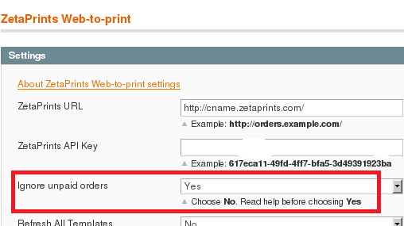

<?xml version="1.0" encoding="UTF-8"?><rss version="2.0"
	xmlns:content="http://purl.org/rss/1.0/modules/content/"
	xmlns:wfw="http://wellformedweb.org/CommentAPI/"
	xmlns:dc="http://purl.org/dc/elements/1.1/"
	xmlns:atom="http://www.w3.org/2005/Atom"
	xmlns:sy="http://purl.org/rss/1.0/modules/syndication/"
	xmlns:slash="http://purl.org/rss/1.0/modules/slash/"
	>

<channel>
	<title>Payments &#8211; On web to print sofware, solutions and hosted services</title>
	<atom:link href="http://www.zetaprints.com/blog/category/payments-2/feed/" rel="self" type="application/rss+xml" />
	<link>http://www.zetaprints.com/blog</link>
	<description>From web to print and everything in between</description>
	<lastBuildDate>Fri, 02 Aug 2013 10:44:32 +0000</lastBuildDate>
	<language>en-US</language>
	<sy:updatePeriod>hourly</sy:updatePeriod>
	<sy:updateFrequency>1</sy:updateFrequency>
	<generator>https://wordpress.org/?v=4.4.1</generator>
	<item>
		<title>Overcharging for web-to-print</title>
		<link>http://www.zetaprints.com/blog/2012/02/19/overcharging-for-web-to-print/</link>
		<comments>http://www.zetaprints.com/blog/2012/02/19/overcharging-for-web-to-print/#respond</comments>
		<pubDate>Sun, 19 Feb 2012 10:21:08 +0000</pubDate>
		<dc:creator><![CDATA[admin]]></dc:creator>
				<category><![CDATA[Bugs and fixes]]></category>
		<category><![CDATA[Payments]]></category>

		<guid isPermaLink="false">http://www.zetaprints.com/blog/?p=1022</guid>
		<description><![CDATA[Our Magento web-to-print extension versions prior to 2.0.1.0beta5 generate output pdf/jpg files and bill for the order regardless of the payment result in Magento. It led to some of our customers facing bills much more than they expected. E.g., an order was placed, files generated, no payment from the customer, but it was still billed [&#8230;]]]></description>
				<content:encoded><![CDATA[<p>Our <a title="web-to-print software" href="../../../../magento-web-to-print/">Magento web-to-print extension</a> versions prior to 2.0.1.0beta5 generate output pdf/jpg files and bill for the order regardless of the payment result in Magento. It led to some of our customers facing bills much more than they expected. E.g., an order was placed, files generated, no payment from the customer, but it was still billed for at ZP end.<span id="more-1022"></span></p>
<h3>Solution 1: Express checkout</h3>
<p>Web-to-print sites with credit card payments via PayPal can switch to <a title="About PayPal express" href="https://cms.paypal.com/us/cgi-bin/?cmd=_render-content&content_ID=developer/e_howto_api_ECGettingStarted">PayPal Express</a> option. There will be no orders generated in Magento unless the customer pays. The disadvantage is that you may want to accept the order and chase the customer for the payment or offer an alternative method. So it&#8217;s better to get the order and see if you can get paid later. Still, it&#8217;s a quick fix without updating the web-to-print extension.</p>
<h3>Solution 2: upgrade ZP web-to-print extension</h3>
<p>The latest beta release 2.0.1.0beta5 has some important changes to the way ZetaPrints generates orders.</p>
<p><strong>We added a new configuration parameter on our web-to-print configuration page.</strong> The ZP order will remain as <em>Saved</em> and not billed for until the payment is confirmed in Magento or manually generated in ZP.</p>
<p><a href="../../../wp-content/uploads/2012/02/web-to-print-payments.png"></a></p>
<p><strong>We also changed the way the code responds to <a title="Details on web-to-print / paypal events" href="http://code.google.com/p/magento-w2p/wiki/PaypalPaymentMethods">internal Magento events</a>.</strong> It should solve the problem with third party payment extensions. We definitely know there problems with customers in Chile, Netherlands, Belgium, Germany and some others. Please, upgrade and let us know if we still don&#8217;t play nice with your payments extension.</p>
<h2>Free web-to-print upgrade service</h2>
<p>We are happy to provide a free upgrade service to any affected customers. Please, <a title="Contact ZetaPrints" href="mailto:support@zetaprints.com">let us know</a> your situation.</p>
<p><strong>Thank you everyone for your patience with us.</strong></p>
<p>&nbsp;</p>
<p>&nbsp;</p>
]]></content:encoded>
			<wfw:commentRss>http://www.zetaprints.com/blog/2012/02/19/overcharging-for-web-to-print/feed/</wfw:commentRss>
		<slash:comments>0</slash:comments>
		</item>
	</channel>
</rss>

<!-- Localized -->